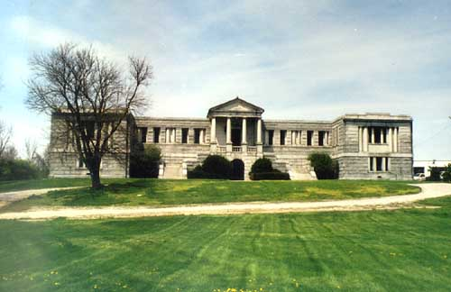
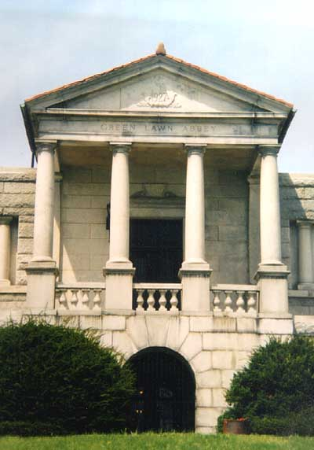
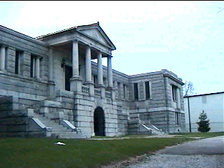
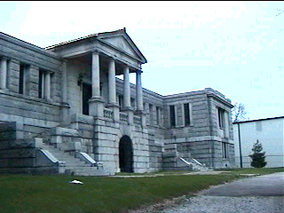
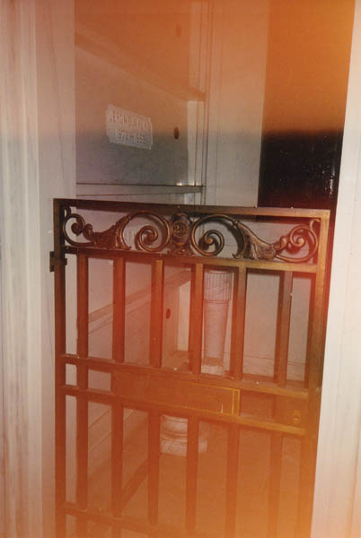

Greenlawn Abbey is a Romanesque pillared mausoleum building located at 700 Greenlawn Avenue near Harmon, just down the street from Greenlawn Cemetery. Thurston the Magician, contemporary and friend of Harry Houdini, is entombed here; if you're rich enough to buy a shelf, you can be too. The cemetery belongs in part to the city of Columbus, and remains available to everyone, including--in many instances--the indigent. But Greenlawn Abbey is a private concern. Cemetery officials are quick to declaim any affiliation with the Abbey. It seems that Greenlawn Cemetery gave the Avenue its name, while Greenlawn Abbey was able to adopt the name of the street. With its lovely architecture and extensively sculpted landscape it seems of a piece with the cemetery--an impression deliberately given. But the city established its new municipal cemetery to be much more than a for-profit venture. More than 150 years later it remains as wonderful a park as any in the state.
Somehow I overlooked the Abbey for several years; I heard the name but was never quite certain where it was. A place this impressive would get a lot of attention if it were a little more visible in the city.

Although it is used rarely, the Abbey has many of the features of a public building: ashtrays, waiting room chairs, drinking fountains, restrooms. There's something eerie about the thought of those public restrooms just sitting there for months.
Interestingly, the Abbey is 100% unaffiliated with Greenlawn Cemetery. This explains why it sits a block or so from the property. Apparently someone built it there to capitalize on the reputation of the graveyard; some employees have complained that the abbey is an embarassment because of the way it's maintained, or something like that. Personally I can't see how an edifice as attractive as this could incur so much scorn.
 

As you might have guessed, Greenlawn Abbey is supposed to be haunted, and I was determined to get inside. After a couple of stops to look around we realized that the place is usually locked up. I had almost given up when we stopped there before our trip to Greenlawn Cemetery to show the place to our friend. When we climbed the stairs to the upper level we saw that the doors were open, but the gates had been chained across the doorway. When you pulled the gates as far open as they would go there was a gap at the top, just big enough to fit through. My girlfriend at the time did not want to try, and my pussy friend's arms were too weak to boost himself through, so I ended up being the only one who got inside.
In the middle were chairs and plants arranged like a lobby area. Long hallways extend in either direction from the foyer, ending T-junctions with shorter hallways. I walked down each hallway, all the way to the end, and then came back to the middle to talk about it through the gate to my girlfriend, who was waiting at the doorway. I was scared to death when I was going down the hallways, alone, at night, with a chained gate between me and the outside, because I knew that if I had to run from the living dead I would end up pressed against the inside of the gate while they ate into my neck. But I did manage to snap a few pictures.

All along the hallways are things like horse stalls, gated off, with horizontal tombs stacked inside. Names are carved into the tomb things. In the shorter hallways were the more conventional square shelving things. I actually saw what looked like one of the squares broken in two, with a pile of some kind of crap on the floor. But no ghosts.

If you're interested in seeing Greenlawn Abbey, you can do so day or night. Getting in is a different story. You might try more conventional means; I think I got really lucky that night. On another trip we found the ground floor doors kicked in and were able to revisit. I'd like to ask that you not vandalize the place, though, even if you really want to see what it looks like inside.

For further information on the scarier aspects of the abbey and graveyard, click below.
Back
Sources
Smith, Robin. Columbus Ghosts. Worthington, OH: Emuses, Inc., 2002. pp. 63-67.